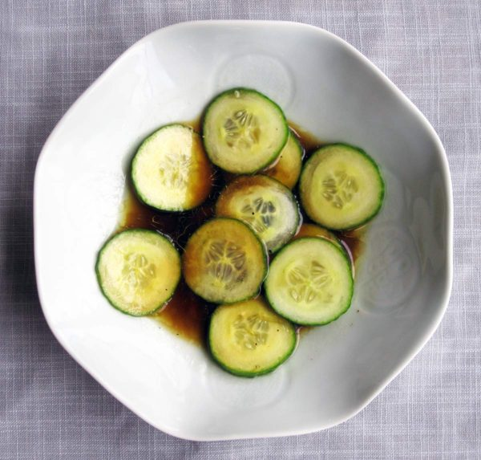

Japanese cucumber salad
Looking for a side salad, but only have cucumbers? This Japanese cucumber salad has you covered. It's crisp and crunchy, and the dressing is addictive.
Cucumber
1
Vinegar (rice wine)
1/4
cup
Soy sauce
1/4
cup
Sesame oil
1
tbsp
Olive oil
1 tbsp
Maple syrup
1
tbsp
Salt & pepper
1
pinch
Thinly slice the
1 Cucumber
In a mixing bowl, stir together the
1/4 cup Vinegar (rice wine)
1/4 cup Soy sauce
1 tbsp sesame oil
1 tbsp Olive oil
1 tbsp Maple syrup
Pinch of salt & pepper
Add the sliced cucumber. Place in fridge to marinate for at least 10 minutes before serving.
